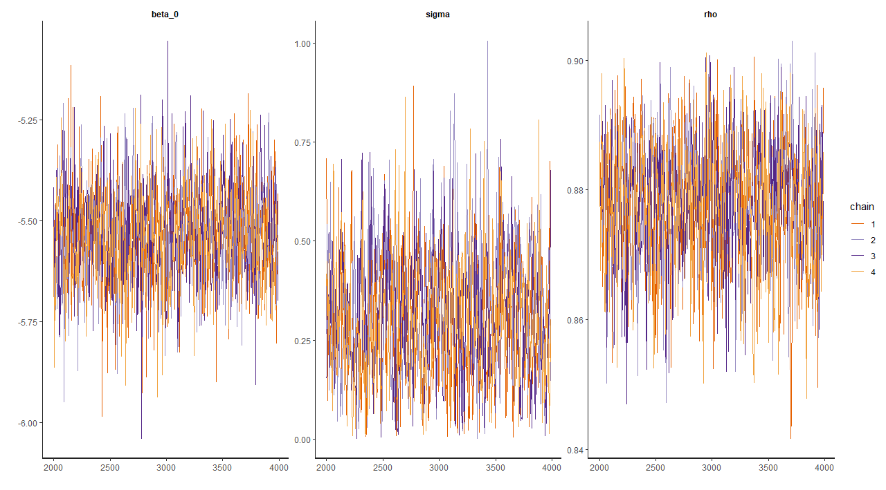

Maps, Box Plots for AR Model
JMitic01
2025-01-16
Last updated: 2025-04-28
Checks: 2 0
Knit directory: myproject_scframework/
This reproducible R Markdown analysis was created with workflowr (version 1.7.1). The Checks tab describes the reproducibility checks that were applied when the results were created. The Past versions tab lists the development history.
Great! Since the R Markdown file has been committed to the Git repository, you know the exact version of the code that produced these results.
Great! You are using Git for version control. Tracking code development and connecting the code version to the results is critical for reproducibility.
The results in this page were generated with repository version ed635df. See the Past versions tab to see a history of the changes made to the R Markdown and HTML files.
Note that you need to be careful to ensure that all relevant files for
the analysis have been committed to Git prior to generating the results
(you can use wflow_publish or
wflow_git_commit). workflowr only checks the R Markdown
file, but you know if there are other scripts or data files that it
depends on. Below is the status of the Git repository when the results
were generated:
Ignored files:
Ignored: .Rproj.user/
Ignored: data/data_list_august.RData
Ignored: data/fit_allaugust.RData
Ignored: data/logbetapop.RData
Ignored: data/mean_theta_with.RData
Ignored: data/sc_counties_merged.RData
Ignored: stan_allcounties.RData
Ignored: stan_allcounties.Rmd
Ignored: stan_output.RData
Untracked files:
Untracked: data/eta_list.RDS
Untracked: data/merged_predictions_observed.RDS
Untracked: data/posterior_samples.RDS
Untracked: data/unique_county_population.csv
Untracked: myproject_clean/
Note that any generated files, e.g. HTML, png, CSS, etc., are not included in this status report because it is ok for generated content to have uncommitted changes.
These are the previous versions of the repository in which changes were
made to the R Markdown (analysis/mapsboxplotsAR.Rmd) and
HTML (docs/mapsboxplotsAR.html) files. If you’ve configured
a remote Git repository (see ?wflow_git_remote), click on
the hyperlinks in the table below to view the files as they were in that
past version.
| File | Version | Author | Date | Message |
|---|---|---|---|---|
| Rmd | ed635df | JMitic01 | 2025-04-28 | wflow_publish("analysis/mapsboxplotsAR.Rmd") |
| html | 41f1151 | JMitic01 | 2025-04-28 | Build site. |
| Rmd | 0cec317 | JMitic01 | 2025-04-27 | Force remove mistakenly added submodule myproject_clean |
| html | 0cec317 | JMitic01 | 2025-04-27 | Force remove mistakenly added submodule myproject_clean |
Model Overview and Notations
The following report summarizes the implementation and results of a Bayesian hierarchical model incorporating temporal autocorrelation via AR(1) processes for 20 counties. Below, we detail the results, including trace plots, posterior distributions, and visualizations of model predictions.
####Posterior Distributions and Correlations This pair plot shows the
posterior distributions of model parameters beta_0,
rho, and sigma and their pairwise
correlations. The histograms along the diagonal represent the marginal
distributions, while the scatter plots in the off-diagonal elements
illustrate the relationships between parameters. These results are
critical for assessing parameter uncertainty and dependencies in the
Bayesian model.

Beta, Sigma, and Rho Trace Plots
The trace plots for beta_0, sigma, and
rho illustrate the sampling behavior of these key
parameters. A stationary pattern with no drift over iterations suggests
that the sampler effectively explored the posterior distribution.

Theta Trace Plots
The theta parameters capture county-specific deviations. Below, we
present trace plot for theta[10]. Consistent sampling
patterns indicate adequate mixing and convergence for these
parameters.
Boxplot of Posterior Theta Distributions
This boxplot depicts the posterior distributions of the parameter
theta across counties in South Carolina. Counties with larger values of
theta indicate higher contributions to the modeled response, potentially
reflecting higher disease incidence or risk. The variability in theta
values across counties provides insights into regional heterogeneity.

Posterior Mean of Lambda Across Counties for April 2020
The map below shows the spatial distribution of the posterior mean of \(\lambda\) for April 2020.
- Definition: \(\lambda\) represents the county-level expected disease rate.
- Visualization: Counties are shaded according to their mean \(\lambda\), with a gradient from blue (lower values) to red (higher values). Grey indicates counties for which estimates are unavailable.
This map highlights regional patterns in disease rates, helping identify hotspots or areas with reduced disease activity.

Cases Per Capita Across Counties
The following map visualizes reported cases per capita for the 20 counties. Counties are color-coded based on their per capita case rate, ranging from low (blue) to high (red). This map helps identify regions with higher case densities, providing insight into spatial trends of COVID-19 cases. - Definition: Cases per capita are calculated as the total number of cases divided by the county population, providing a standardized measure. - Purpose: This approach highlights regions with disproportionately high or low case rates relative to population size.


Summary
The analysis provides an overview of county-level disease trends for the selected 20 counties. By incorporating temporal autocorrelation through the AR(1) structure and using hierarchical Bayesian methods, the model captures spatial and temporal variability in disease rates.